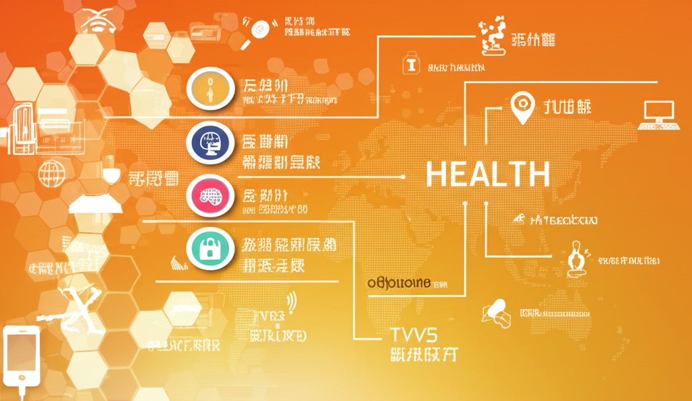

# 最新網路資訊摘要
## 引言
本文整理了近期網路上的熱門資訊，涵蓋科技、健康、教育、汽車等不同領域。從蘋果的學生挑戰賽、血壓與肥胖的關聯，到下一代MX-5的動力猜測，希望透過快速掃描，讓讀者掌握最新的網路動態。
## 主體內容
### 第一點：科技趨勢與蘋果動態
從自由電子報3C科技的報導中，我們看到台灣學生在蘋果的WWDC學生挑戰賽中獲得獎項，展現了台灣在科技教育方面的實力。同時，報導也提及了蘋果iPhone在中國市場的銷售情況，反映了市場競爭的激烈。此外，ePrice.TW 提供最新手機資訊，揭露了尚未發表的vivo X200 Ultra 的開箱影片，以及 Motorola Edge 60 的相關消息，顯示了手機市場的快速迭代。
### 第二點：健康與醫療資訊
自由健康網報導指出，高血壓與肥胖有高度關聯，強調了減重對於穩定血壓的重要性。 TVBS新聞則報導了快速減重可能導致膽結石增生的健康風險，提醒民眾在追求健康體態的同時，也需要注意身體的變化。寵物健康醫療網提供寵物健康資訊，高雄市動保處與健身工廠合作舉辦「犬貓治癒日」，促進動物福利。
### 第三點：教育與地方資訊
國立苗栗特殊教育學校網站提供特教相關資訊，幫助有特殊教育需求的學生。金門日報全球資訊網則提供了金門地區的地方新聞、社論以及其他生活資訊。另外，Etsi搜尋引擎出現了疑似色情廣告的搜尋結果，提醒網路使用者注意資訊安全。而關於下一代MX-5不會裝渦輪但可能會使用新能源動力的猜測，則為汽車愛好者提供了想像空間。
## 結論
本次網路資訊摘要涵蓋了多個面向，從科技發展到健康生活，再到教育資訊，反映了網路資訊的多元性。同時，也提醒我們在獲取資訊的同時，需要注意資訊的真偽與安全性。